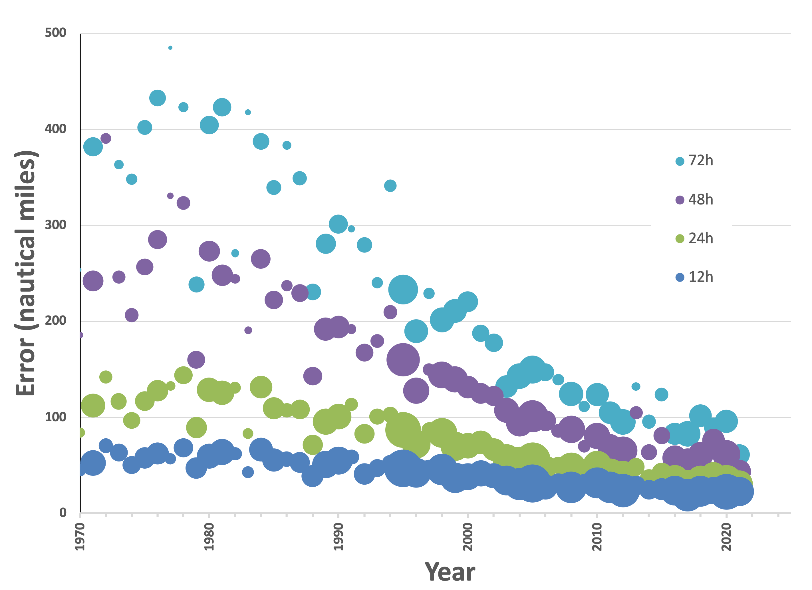

At this point, I’m slightly frustrated by the scientific community, so I thought I’d start with a provocative question to poke the beast with a stick. It’s intentionally rhetorical. If you’re reading this and looking for an answer, I suggest starting within—it’s a philosophical (but not nihilistic) question. It’s important to ask because any crusade requires a clear objective, a specific direction, and resilience to adversity. I get the impression that the answer to this question from many of my colleagues might boil down to “because it’s an important enough topic to get me funding and status within my tribe.” Of course, such a cynical answer would be expressed with more gravitas, but it’s where the answers would ultimately lead.
Perhaps it’s driven by ego, but in writing this series, I’ve come across not one but two solutions to mitigate the impact of geologic carbon on Earth’s atmosphere. Yes, they’re simplistic solutions, perhaps mundane ones at that. And they need refinement! The bottom line is that, unlike other myopic hallucinations, both proposed solutions (not “my” solutions; I don’t own them) have a reasonable chance of changing humanity’s trajectory before “climate change” is fait accompli. And, if successful, they might save our ass without devolving into a technocratic dystopia under global authoritarian rule.
So, let’s move on to the question.
If you parse the phrase “fighting climate change,” it should be obvious that any alleged solution presents more than a few obstacles going to a global scale. As I’ve pointed out before, “climate change” (or the more recent “the climate crisis”) is a fearmongering term that stems from the science behind “global warming,” which is a measurable thing.
With the recent destruction wrought by Hurricanes Fiona and Ian in the news, let’s return to a previous imperfect analogy, the parallels between computer models of hurricanes and computer models of climates. I think the analogy is apt in this case since both climate change and hurricane intensities and tracks are directly related to ocean temperatures. We can see that predictions are improving:

These are highly refined models with sufficient data that empirical model refinement using “machine learning” is feasible. But the point is, while computational models are improving, they’re not fully predictive. If we plan to “fight climate change” to victory, can we get* more relevant insight by looking at the more immediate problem of “fighting hurricanes”?
Some pundits have ridiculed the former POTUS for suggesting that we confront hurricanes using nuclear weapons. [For the record, I agree it’s a silly idea.] But to his credit, he took into account both the scale of the problem and its energy requirements! In fact, he underestimated: The wind energy alone in a typical hurricane is 10^17 joules per day , and a modern nuclear weapon (100 kilotons) would only release about 10^14 joules (1,000 times less energy) per explosion . And a hurricane is “just” a single storm!
Such “solutions” are not the purview of the scientifically ignorant. Bill Nye (yes, “the Science Guy”) addresses this in his latest media exploitation series, “The End is Nye”. He suggests that installing “thousands of wind turbines” would be enough to slow the storm down.
It’s an interesting approach, but where’s the data? It’s easy to find, and also a semi-promotional YouTube out of Stanford, dated 2014.
Let’s examine the science a bit more closely. Well, it’s Stanford research, published in Nature Climate Change 1 , so it’s at least been peer-reviewed. Certainly, it’s a plausible solution, right? Well, no. The rationale is spurious—the authors suggest that the electricity generated by a large array of wind turbines could make the economics attractive, and such an array could be constructed profitably.
But it’s not just about simple energy accounting, people! Electricity can’t be stored or transported over large distances! The paper explicitly models New Orleans under threat from Hurricane Katrina, adding an incredible 78,286 wind turbines (more than the installed base ) spread over hundreds of thousands of square kilometers. The array is modeled to generate, at its peak, 450 GW of power, 2 nearly 300 times the largest wind farm in the US 3 (California's Alta Wind Energy Center in the Mojave, outside LA). If installed pre-Katrina, New Orleans would have had to figure out what to do with an additional half-terawatt of power as the storm approached. I’m sure that the academics would say, “Run pumps to reverse the storm surge!” or “Blow the storm back out to sea using giant fans!” or another self-serving absurdity. Because these academic modelers have never had to build anything, they can speculate freely as apparent "thought leaders". It's bullshit.
Another rhetorical question for you: “How different is that from proposing nuclear deterrence for hurricanes?”
Ultimately, the choice implied by the titular question boils down to, “Are humans equipped to enter this particular fight, or should we spend the time we (may) have left girding our loins for the post-apocalypse?” [I say “may” because the evidence is piling up that the cascade of events leading to a dramatic change in world climates may have already begun.]
Twice in this series (and once a decade ago), I’ve outlined ways of strategically exploiting our knowledge of natural processes to engage with the problem of “global warming”. Here’s a summary:
-
PETRO. My foundational ARPA-E program, aka “Plants Engineered To Replace Oil”
-
Proposal: Engineer crops used for biofuels with alternative biochemical pathways for carbon fixation to improve photosynthetic energy storage
-
Economic driver: Agricultural costs drop due to higher land use efficiency.
-
Tradeoff: Whole Foods’ backed consumer opposition to GMO 4 .
-
-
Self-contained desalination for agriculture
-
Proposal: Reduce costs of fresh water by engineering off-shore nuclear-powered desalination to expand Earth’s arable land area
-
Economic driver: Agricultural harvest of food and sugarcane reduce consumer costs of biological carbon sources
-
Tradeoff: Geopolitical opposition to more nuclear reactors at sea.
-
-
Increase carbon capture where photosynthesis is already happening by replacing lower absorptivity C3 plants with higher absorptivity C4 plants
-
Proposal: Remove (but don’t burn) aboveground biomass in rainforests and plant sugarcane instead
-
Economic driver: Lumber and lower-cost sugar for petrochemical replacement.
-
Tradeoff: Environmentalist opposition to a loss of biodiversity.
-
I list them again here to point out that all share the same “ between Scylla and Charybdis ” dilemma, where humanity must choose solutions that cannot satisfy all stakeholders. In my experience, that’s called “leadership”.
With so much at stake, I am dismayed that many of my tribe of scientists continue to “brainstorm” possible solutions without comprehending that if humans expect to make a difference in the result, any solution (even off-shore wind farms with tens of thousands of turbines) needs to be not just “implementable” in theory but “implemented” in practice. It has to happen soon, at scale, and in concert with what we understand about the natural world (including human societies and systems, not just the principles of Science).
Risk cannot be eliminated. Every technology choice (especially in energy and economics) inevitably requires a tradeoff, yet we’re still chasing shiny new solutions that promise us benefits without sacrifice. Would it be awesome if we found a magic bullet? Sure. Would it have an impact in the next 30 years? Even with known technologies, it’ll be hard.
The argument that we should “fight” climate change also begs the questions of “Who’s the enemy?” and “How do we know if we’ve won?” I’ve gone off on Michael Mann before 5 about the absurdity of treating the climate change problem as a confrontation, and I stick with that.
Let me close with this rhetorical question: If modern science is apolitical, why are practical solutions that employ approaches such as “GMO”, “nuclear”, and “deforestation” not considered more seriously by the “scientific community”? If it’s politics, stop it!
Jacobson, M., Archer, C. & Kempton, W. Taming hurricanes with arrays of offshore wind turbines. Nature Clim Change 4 , 195–200 (2014). https://doi.org/10.1038/nclimate2120
If you’re really paying attention to the math, then that’s 10 TWh per day (450 GWx24h), or about 4 x 10^16 J, much closer to the energy content of the storm.
Yes, Whole Foods. They’re the primary funding source for The Non-GMO Project, a largely unaccountable NGO that is more like a PAC. It applies the little “Non-GMO” label applied to consumer packaged goods. It turns out that a GMO product is whatever The Non-GMO Project decides it is.